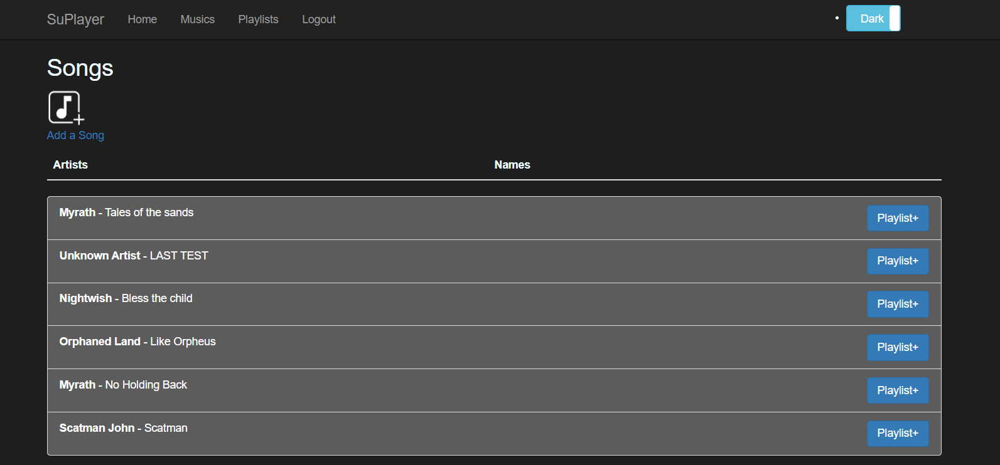
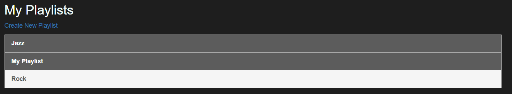
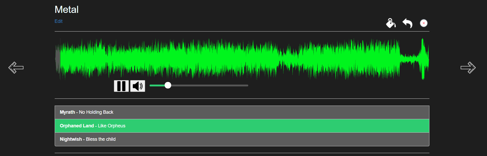
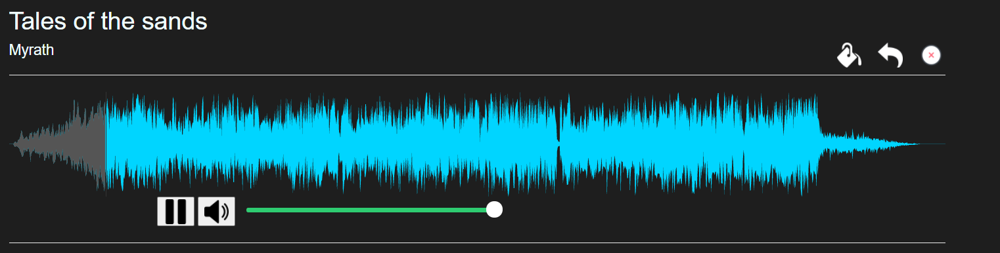

-The backend is in ASP.NET/C#. -The frontend is using Razor and basic web technologies. -Data is stored in a MySql database but songs are stored in mp3 format on the server.
Users can use this form to login/register. When the user isn't authentified, he can only access this page as all other pages lead to an error message. Of course the application uses many security features as hash, JWT, SCRF Tokens, HTTPS etc...
Here's the error message when a user tries to access an route without being authentified.
All authentified users can access this page, and songs are common to all users.
They can also upload their own songs on this from.
They can upload songs using :
- Mp3/wav format
- Youtube links : the application converts the video to mp3 format and stores it.
They can name the artist and the song themselfs, but if they don't do, those filds will be automatically generated from the file/video.
This is where users can create/edit/delete their playlists.
They can click a playlist to open the player :
In the player, users can : - Play/Stop music. - Go directly to a part of the current music. - Change music - Adjust volume. - Change player's color. To Play/Stop, adjust volume and change music, they can either us the buttons or keyboard shortcuts. User's preferences are saved and used by default when he opens the player. They can also play a music individually from the songs list. 
The application is responsive and adapts to device's screen. So it can also be used on mobile/tablets.
This application uses many security feature as : -HTTPS -JWT -CSRF Tokens -Rate limit (to prevent DDOS) -XSS filter -Password hash (Bcrypt) -And others...